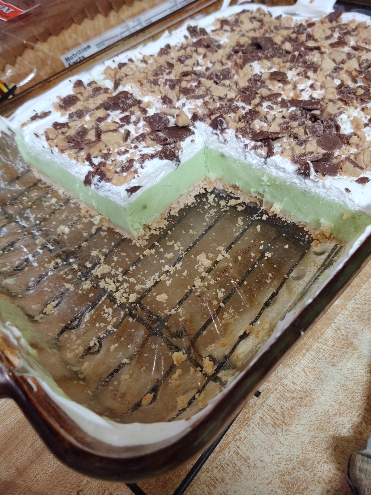

Pistachio Ice Cream

Description
This is a refreshing, light dessert; a nice treat for St. Patrick's Day or any special occasion. My husband and son will eat a whole 9x13-inch dish in less than a week!
Ingredients
- Crust:
- 2 sleeves buttery round crackers, crushed
- ½ cup melted butter
- Topping:
- ½ gallon vanilla ice cream, softened
- 2 (3 ounce) packages instant pistachio pudding mix
- 1½ cups milk
- 1 (12 ounce) container frozen whipped topping (such as Cool Whip®), thawed
- ¼ cup chocolate-covered toffee bits (such as Heath®), or to taste
Steps
- Preheat oven to 350 degrees F (175 degrees C).
- Combine cracker crumbs and melted butter in a bowl. Mix until evenly moistened; press into the bottom and sides of a 9x13-inch baking dish.
- Bake in preheated oven until crust is lightly browned and smells toasted, about 15 minutes. Remove from the oven and cool.
- Mix ice cream, pudding mix, and milk together in a bowl until combined; spread evenly onto prepared crust. Spread whipped topping over ice cream mixture; top with toffee bits. Place in freezer until hardened, at least 1 hour.